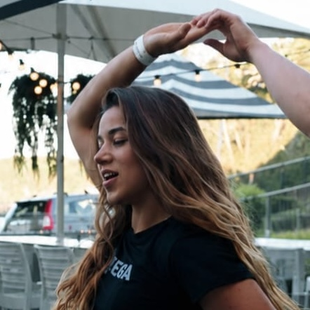

Class Schedule
Updated monthly. Classes are free & drop in! Please register below

Check the WhatsApp group for any last-minute changes.
Casino · Rueda de Casino · Kuala Lumpur
Community classes in KL! Weekly classes for all levels. Spreading the joy of Cuban music and dance!
Updated monthly. Classes are free & drop in! Please register below
Check the WhatsApp group for any last-minute changes.
Moves are split into sessions (A, B, C, D). Each class covers one section — so you'll rotate through them over time.

Syllabus influenced by our friends at Rueda con Ritmo. Download PDF
Starting out — If this is your first time trying or dancing Cuban salsa, we recommend starting from the beginning! Our beginner classes are welcoming to every kind of level, and especially to complete beginners!
Moving to Level 2 — Generally, we always recommend doing all the levels twice before trying to move on to a higher level. For example, if you have done 2x Beginners A and 2x Beginners B, that would be a good time to try Level 2.
Moving to Level 3 — Similarly, if you feel as though you're comfortable with the moves in Level 2 — e.g. you are comfortable with 70, adios, enchufa doble & dame dos — that would be a good time to try Level 3.
"I've danced before!" — If you have danced salsa before but not Cuban salsa, we also recommend starting from the beginning! Cuban salsa has a lot of moves that break away from the line that many other salsas follow. Don't worry — just 1 or 2 classes should be enough to help you feel comfortable with the different kinds of movement found in Cuban salsa.
Safety — If we see that you are not familiar with those moves yet, we may ask you to step out of the class and try a few more of the previous level classes first. This helps us prevent any injuries for everyone dancing!
Feel free to ping an instructor if you have any questions.

We rotate between three venues depending on the day.
Majlis Perwakilan Penduduk, TTDI, Kuala Lumpur
Nu Sentral Mall, Kuala Lumpur

As a lover of Cuban music and dance, Shaun learnt his trade dancing and performing Cuban Salsa & Rueda de Casino out in San Francisco. Focusing on dynamic movements and precise musicality, Shaun's love for the music permeates all aspects of his dance and movement.
Having performed in Cuba and on grand stages such as the SF Opera House, Shaun does these classes for free because he finds it fun. Trying his best to create a warm and welcoming community, he'd like to invite you to join in whenever the time feels right for you.

Shyam is passionate about community-driven experiences that bring people together through culture, movement & shared learning. First introduced to Cuban Salsa & Rueda de Casino in 2018, what drew her in was not just the music & movement but the warmth and connection it creates — a space where people come together across cultures and backgrounds.
As part of Kuala Rueda, she hopes to help grow an inclusive and welcoming Cuban salsa community in Kuala Lumpur where dancers of all levels can learn, connect & simply enjoy being part of the rueda.

Suraya's dance journey began in Australia, where she trained in LA-style salsa before discovering the energy and musicality of New York mambo. After moving to Malaysia, she fell in love with Cuban salsa and rueda, embracing the playful, social spirit that makes Cuban dance so unique. Beyond the dance floor, Suraya regularly performs as lead singer with Cuban and Latin jazz bands, bringing a deep love of music and rhythm into everything she teaches.
As a follower teacher and demonstrator with Kualarueda, Suraya is passionate about helping dancers connect not only with the music, but with each other. She believes salsa is more than just steps — it's a shared space to express yourself, build confidence, stay active, and form genuine friendships with people from all walks of life. Suraya loves supporting musicality, connection, and the joy of play, creating a welcoming environment where everyone can learn, laugh, and grow together.
Schedule updates and announcements go out on WhatsApp. Class clips on Instagram.
New to Kuala Rueda? Sign up here — it takes a minute, and you'll be added to our WhatsApp group for schedule updates.
Register Here